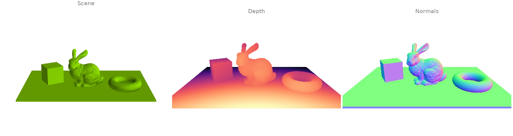
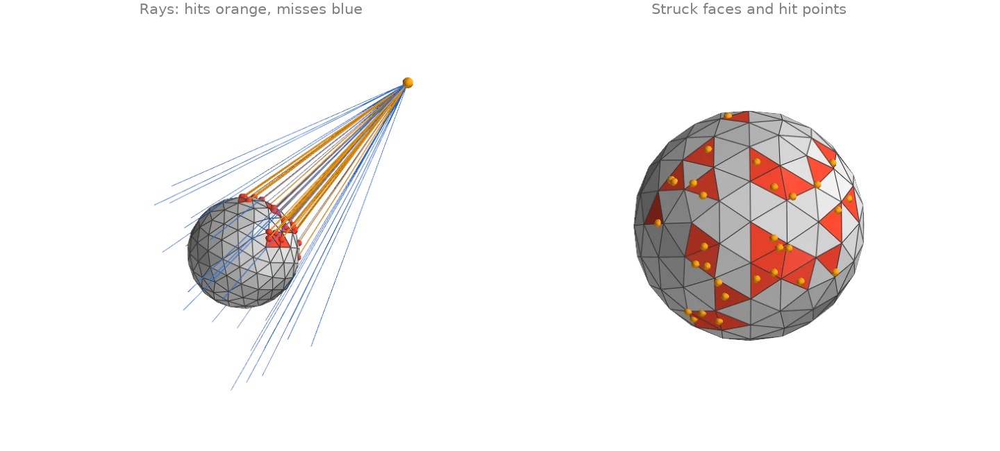
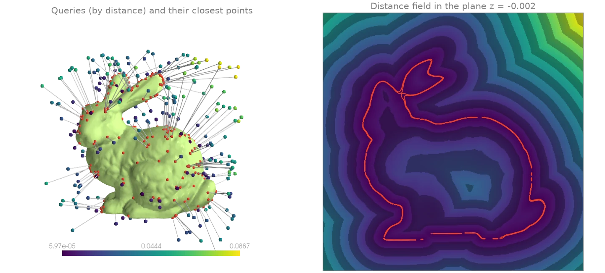
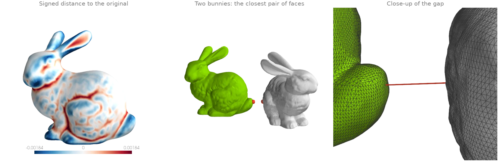
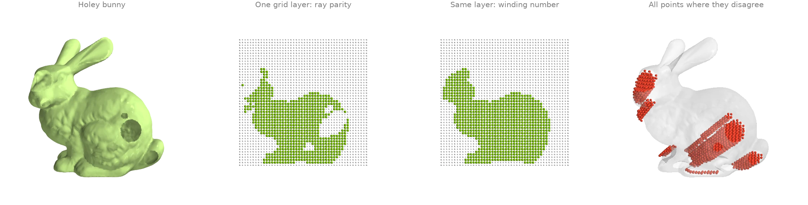
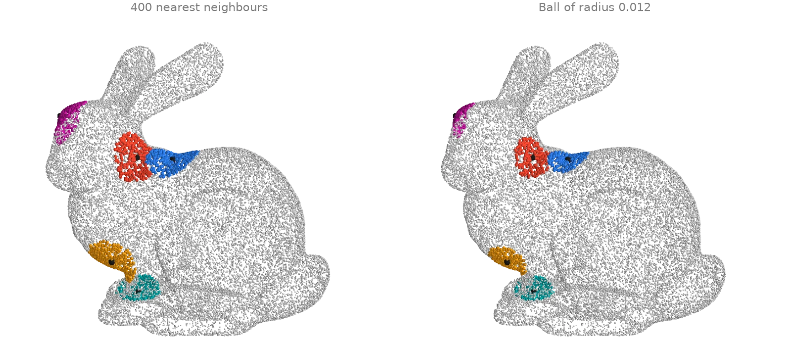
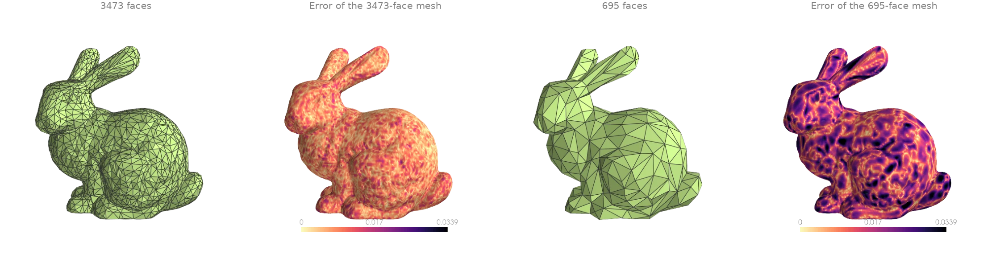

Spatial queries
Ray casting, closest points, distances between shapes, inside/outside tests and neighbour search.
Ray casting a depth and a normal image
One ray per pixel of a pinhole camera is cast against the scene's BVH with
intersects_location. Each hit gives the depth of its pixel,
and the normal of the face it struck from
face_normals_and_areas gives the pixel's normal:
a ray tracer's first bounce in a few lines.
import numpy as np
import warp as wp
import ordito as od
from examples import data
vertices, faces = data.load("scene", device)
mesh = wp.Mesh(points=vertices, indices=faces)
# A pinhole camera at `eye` looking at `target`, one ray per pixel.
height, width, fov = 300, 480, np.radians(45.0)
eye, target, up = (
np.array([0.0, 1.4, 3.2]),
np.array([0.0, 0.35, 0.0]),
np.array([0.0, 1.0, 0.0]),
)
forward = (target - eye) / np.linalg.norm(target - eye)
right = np.cross(forward, up) / np.linalg.norm(np.cross(forward, up))
v, u = np.mgrid[0:height, 0:width]
scale = np.tan(fov / 2) / height * 2
directions = (
forward
+ (u - width / 2)[..., None] * scale * right
- (v - height / 2)[..., None] * scale * np.cross(right, forward)
).reshape(-1, 3)
origins = wp.array(np.broadcast_to(eye, directions.shape), dtype=wp.vec3, device=device)
directions = wp.array(directions, dtype=wp.vec3, device=device)
locations, ray_index, face_index = od.ray.intersects_location(mesh, origins, directions)
face_normals, _ = od.triangles.face_normals_and_areas(vertices, faces)
depth = np.full(height * width, np.nan)
depth[ray_index.numpy()] = np.linalg.norm(locations.numpy() - eye, axis=1)
normal = np.zeros((height * width, 3))
normal[ray_index.numpy()] = face_normals.numpy()[face_index.numpy()]
depth, normal = depth.reshape(height, width), normal.reshape(height, width, 3)
print(f"{ray_index.shape[0]} of {height * width} rays hit the scene")
53747 of 144000 rays hit the scene

Modelled on: Open3D: ray casting · trimesh: raytrace · libigl 608
Rays against a mesh: hits and misses
A fan of rays from one point is shot at an icosphere.
intersects_any answers hit or miss for each ray, and
intersects_location returns the first hit of every ray
that strikes: its position, the ray it belongs to and the face it struck.
import numpy as np
import warp as wp
import ordito as od
vertices, faces = od.creation.icosphere(subdivisions=2, device=device)
mesh = wp.Mesh(points=vertices, indices=faces)
# 60 rays from one eye point, aimed at random targets around the sphere.
rng = np.random.default_rng(0)
eye = np.array([3.0, 1.8, 2.4])
targets = rng.uniform(-1.2, 1.2, (60, 3))
origins = wp.array(np.broadcast_to(eye, targets.shape), dtype=wp.vec3, device=device)
directions = wp.array(targets - eye, dtype=wp.vec3, device=device)
hit = od.ray.intersects_any(mesh, origins, directions)
locations, ray_index, face_index = od.ray.intersects_location(mesh, origins, directions)
print(f"{int(hit.numpy().sum())} of {targets.shape[0]} rays hit the sphere")
print(f"{np.unique(face_index.numpy()).size} distinct faces struck")
30 of 60 rays hit the sphere
24 distinct faces struck

Modelled on: trimesh: ray · PyVista: ray_trace
Closest points on a surface
closest_point_on_mesh projects every query point
onto the nearest point of the surface and returns that point, its distance and the face it
lies on. Here it runs on random points around the bunny (the box comes from
aabb) and on a dense grid in a plane through it, whose distances
form the unsigned distance field of the surface.
import numpy as np
import warp as wp
import ordito as od
from examples import data
vertices, faces = data.load("bunny", device)
lower, upper = od.bounds.aabb(vertices)
lower, upper = np.array(lower), np.array(upper)
margin = 0.15 * (upper - lower)
rng = np.random.default_rng(4)
queries = rng.uniform(lower - margin, upper + margin, (300, 3))
queries = wp.array(queries, dtype=wp.vec3, device=device)
closest, distance, _ = od.proximity.closest_point_on_mesh(vertices, faces, queries)
# The same query on a 400 x 400 grid in the plane z = mid-depth: an unsigned distance field.
x, y = np.meshgrid(
np.linspace(lower[0] - margin[0], upper[0] + margin[0], 400),
np.linspace(lower[1] - margin[1], upper[1] + margin[1], 400),
)
grid = np.stack([x, y, np.full_like(x, 0.5 * (lower[2] + upper[2]))], axis=-1)
_, field, _ = od.proximity.closest_point_on_mesh(
vertices, faces, wp.array(grid.reshape(-1, 3), dtype=wp.vec3, device=device)
)
print(f"query distances: {distance.numpy().min():.4f} to {distance.numpy().max():.4f}")
query distances: 0.0001 to 0.0887

Modelled on: trimesh: nearest · Open3D: distance queries
Distance between two surfaces
How far one surface lies from another, two ways. Per vertex:
signed_distance_on_mesh measures every vertex of
a smoothed bunny (filter_laplacian) against the
original, with a sign (negative inside) that shows where smoothing ate into the shape and
where it pushed out. As one number:
mesh_to_mesh_distance returns the exact clearance
between two disjoint meshes and the pair of faces that realises it.
import warp as wp
import ordito as od
from examples import data
vertices, faces = data.load("bunny", device)
smoothed = od.smoothing.filter_laplacian(vertices, faces, lamb=0.5, iterations=40)
signed = od.proximity.signed_distance_on_mesh(vertices, faces, smoothed, sign_mode="winding")
print(f"smoothed vs original: {signed.numpy().min():.5f} to {signed.numpy().max():.5f}")
# A second bunny, turned and set beside the first: how close do they come?
turned = vertices.numpy() @ data.rotation((0.0, 1.0, 0.0), 120.0).T + [0.12, 0.0, 0.02]
turned = wp.array(turned, dtype=wp.vec3, device=device)
clearance, face_a, face_b = od.proximity.mesh_to_mesh_distance(vertices, faces, turned, faces)
print(f"clearance {clearance:.5f} between faces {face_a} and {face_b}")
smoothed vs original: -0.00278 to 0.00263
clearance 0.02464 between faces 16023 and 54012

Modelled on: PyVista: distance between surfaces · MeshLib: signed distance · PyMeshLab: distance
Inside / outside classification
Which points of a grid lie inside the bunny? The bunny here has holes punched in its side, so
"inside" is ill-posed for a ray test:
contains_points votes over the parity of a few rays, and a ray
that escapes through a hole flips its vote. The generalized winding number,
signed_distance_on_mesh with
sign_mode="winding", degrades gracefully instead: it counts how many times the surface wraps
around a point, and a small hole only changes that count slightly.
import numpy as np
import warp as wp
import ordito as od
from examples import data
vertices, faces = data.load("holey_bunny", device)
lower, upper = (np.array(corner) for corner in od.bounds.aabb(vertices))
axes = [np.linspace(lower[i], upper[i], 48) for i in range(3)]
grid = np.stack(np.meshgrid(*axes, indexing="ij"), axis=-1).reshape(-1, 3)
points = wp.array(grid, dtype=wp.vec3, device=device)
mesh = wp.Mesh(points=vertices, indices=faces)
by_parity = od.ray.contains_points(mesh, points).numpy()
signed = od.proximity.signed_distance_on_mesh(vertices, faces, points, sign_mode="winding")
by_winding = signed.numpy() < 0.0
print(f"inside by ray parity: {by_parity.sum()} of {grid.shape[0]} grid points")
print(f"inside by winding number: {by_winding.sum()}")
print(f"the two disagree on {(by_parity != by_winding).sum()}")
inside by ray parity: 24856 of 110592 grid points
inside by winding number: 26899
the two disagree on 2559

Modelled on: PyVista: extract cells inside a surface · trimesh: contains · libigl 702
Nearest neighbours and ball queries
Two neighbourhood queries on a 30 000-point cloud, from five query points.
query_nearest returns the k nearest points of each
query (a fixed count, whose patch size varies with the local density), and
query_ball returns every point within a radius (a fixed size,
whose count varies). Both are exact; the spatial index is built internally, or passed in to
reuse it across calls.
import warp as wp
import ordito as od
from examples import data
points = data.load_points("bunny_cloud", device)
picked = points.numpy()[[1200, 5000, 9100, 17000, 26000]]
queries = wp.array(picked, dtype=wp.vec3, device=device)
knn_index, knn_distance = od.neighbors.query_nearest(points, queries, k=400)
ball_index, ball_distance = od.neighbors.query_ball(points, queries, r=0.012)
print("k nearest: farthest neighbour at", knn_distance.numpy()[:, -1].round(4))
print("ball of radius 0.012: counts", [index.shape[0] for index in ball_index])
k nearest: farthest neighbour at [0.0147 0.0151 0.0151 0.0162 0.0134]
ball of radius 0.012: counts [255, 243, 231, 245, 327]

Modelled on: Open3D: KD-tree
Chamfer and Hausdorff distances
How far is a simplified mesh from the original? The bunny is decimated twice with
quadric_decimate, and
chamfer_points_to_mesh with
point_reduction=None gives the squared distance from every original vertex to the
simplified surface: an error map. The two summary numbers are the symmetric
chamfer_mesh_to_mesh (a mean of squared distances,
the pytorch3d convention) and hausdorff_mesh_to_mesh
(the worst case).
import numpy as np
import ordito as od
from examples import data
vertices, faces = data.load("bunny", device)
results = {}
for ratio in (0.05, 0.01):
# A scan is creased everywhere at a coarse scale: raise feature_angle to reach the target.
coarse_vertices, coarse_faces = od.remesh.quadric_decimate(
vertices, faces, target_ratio=ratio, feature_angle=90.0
)
error = od.metrics.chamfer_points_to_mesh(
vertices, coarse_vertices, coarse_faces, point_reduction=None, single_directional=True
)
chamfer = od.metrics.chamfer_mesh_to_mesh(vertices, faces, coarse_vertices, coarse_faces)
hausdorff = od.metrics.hausdorff_mesh_to_mesh(
vertices, faces, coarse_vertices, coarse_faces
)
print(
f"{coarse_faces.shape[0] // 3} faces: chamfer {chamfer:.2e}, hausdorff {hausdorff:.4f}"
)
results[ratio] = (coarse_vertices, coarse_faces, np.sqrt(error.numpy()))
3473 faces: chamfer 1.99e-04, hausdorff 0.0009
695 faces: chamfer 7.87e-04, hausdorff 0.0021

Modelled on: PyMeshLab: Hausdorff distance · pytorch3d: chamfer loss